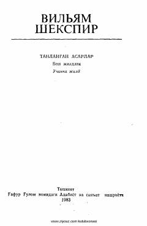

VSVilyam Shekspirning adolat va muhabbatni tarannum etuvchi mashhur komediyasi.
Vilyam Shekspirning ushbu mashhur komediyasi insoniylik, muhabbat, adolat va rahm-shafqat mavzularini o'rtaga tashlaydi. Asar Venetsiyadagi savdogar Antonio va uning do'sti Bassanio atrofida kechadigan qiziqarli voqealarni hikoya qiladi. Tarjimon — Jamol Kamol.